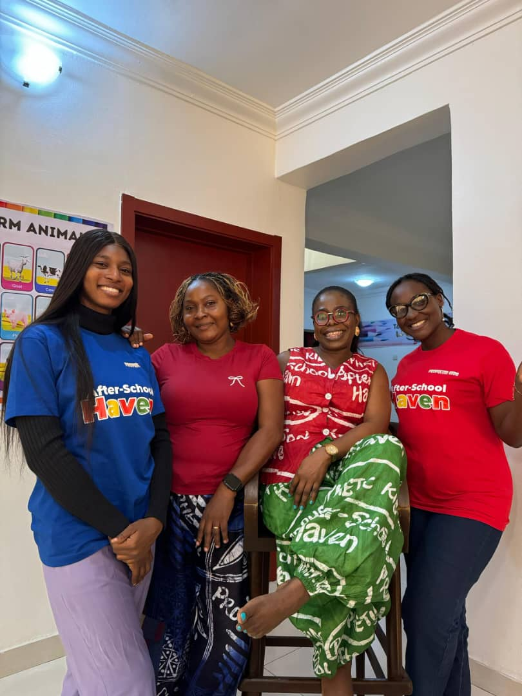
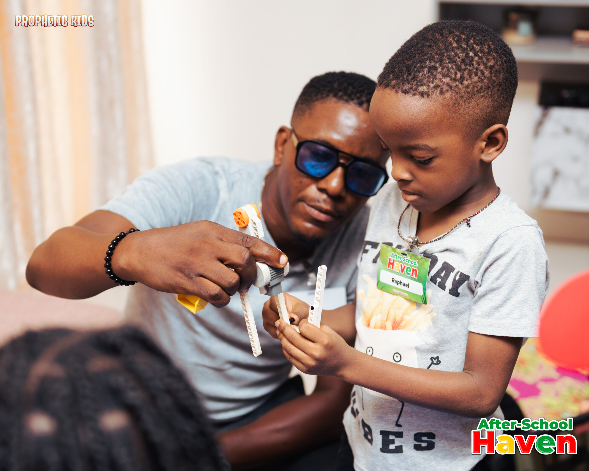
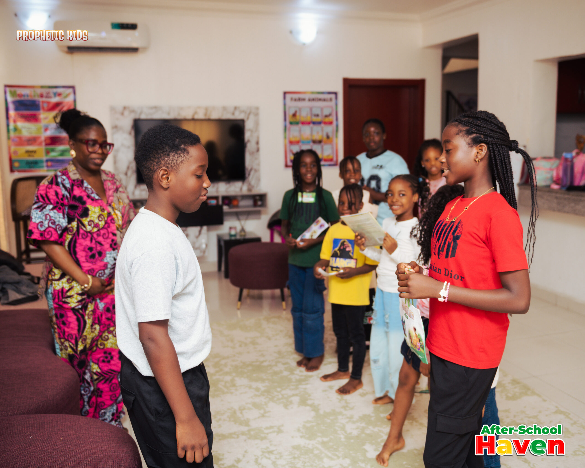

After School Haven
A calm, creative, and caring place where homework gets lighter, friendships grow stronger, and every child is known by name.
Explore the HavenKrin Asset helps children flourish through a nurturing after-school haven and joyful, faith-filled media made for the next generation.
Whether your child needs a dependable after-school home or wants stories, songs, and creative adventures, there’s a place for your family here—and a way for partners to help more children join.
A calm, creative, and caring place where homework gets lighter, friendships grow stronger, and every child is known by name.
Explore the HavenA playful world of animation, books, music, family conversations, and creative activities built around faith, courage, identity, and hope.
Join the adventure
Secure pickup procedures, trained educators, clear ratios, and spaces designed for children.

Small groups and attentive care help every child feel seen, heard, and genuinely welcome.

Homework support meets creative play, character building, movement, and meaningful rest.
Book a Haven tour, meet the media team, or start a conversation about partnering with Krin Asset.